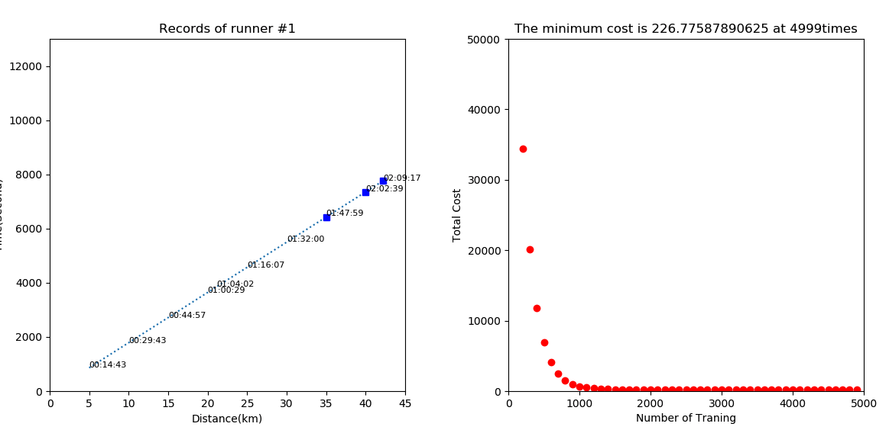

[tensoflow 2.0] 3. 회귀 프로젝트
회귀 프로젝트
[텐서플로우2] - 마라톤 남은 기록 예측 모델 만들기
앞서 마라톤 데이터를 가져와 텐서플로우 1을 사용해 선형 회귀를 구현한 모델이 있었다.
tensorflow 1 linear regression
이제 여기서 learning 부분을 수정해본다.
주목해야 할 부분만 뜯어본다.
첫째로 모델을 만드는 부분은 앞과 동일하다.
import tensorflow as tf
import numpy as np
t_a = int(t_aSpbox.get()) # 몇등의 데이터로 검증할 것인지
t_t = int(t_tSpbox.get()) # 트레인을 몇번 할 건지
t_r = float(t_rSpbox.get()) # learning rate
# X and Y data from 0km to 30km
# 0 ~ 30까지의 데이터만 가져와서 스케일을 10분의 1로 줄여준다.
# 스케일을 줄여주면 bias 값이 낮아진다.
# 스케일을 조절해서 bias 값을 최소화 시킨다
x_train = [ i/10 for i in xData[0:7]]
# 1등한 사람의 데이터를 가져와서 비교해준다.
y_train = record_list[t_a-1][0:7]
# 텐서플로우2 안에 있는 케라스를 사용해 모델 구성
model = tf.keras.models.Sequential() # 여러개의 레이어를 사용하겠다.
model.add(tf.keras.layers.Dense(1, input_dim = 1)) # 입출력이 1개인 레이어를 추가하곘다.
# optimizer
sgd = tf.keras.optimizers.SGD(lr=t_r) # 확률적 경사하강법을 사용하겠다.
# cost/loss function
model.compile(loss = 'mean_squared_error', optimizer=sgd) # 손실 함수는 mse를 사용하곘다.
#prints summary of the model to the terminal
model.summary()
# train the model
# epochs는 데이터가 사전이라 했을 때 그 사전을 몇번 완독하곘는가를 의미하고
# batch_size는 몇장을 보고 맞춰보는지 확인하는 것이다.
history = model.fit(x_train, y_train, epochs = t_t, batch_size = 128)
화면에 출력하기 위해서 100번에 한번씩 데이터를 꺼내서 모은다.
for step in range(t_t):
# 100번마다 출력한다.
if step % 100 == 0:
# print(step, cost_val, W_val, b_val)
cost_val = history.history['loss'][step]
W_val = model.layers[0].get_weights()[0][0]
b_val = model.layers[0].get_weights()[1]
g_xdata.append(step)
g_ydata.append(cost_val)
log_ScrolledText.insert(END, "%20i %20.5f %20.5f %20.5f" % (step, cost_val, W_val, b_val)+'\n')
#gn.set_data(g_xdata, g_ydata) - 그걸 차트에 표시한다.
grad_ax.plot(g_xdata, g_ydata, 'ro')
grad_ax.set_title('The minimum cost is '+str(cost_val)+' at '+str(step)+'times')
grad_fig.canvas.draw()
최종적으로 나온 데이터를 확인해본다
# our hypothesis XW+b
W_val = model.layers[0].get_weights()[0][0] # 0번째 배열을 첫번째 값
b_val = model.layers[0].get_weights()[1]
log_ScrolledText.insert(END, "%20s" % ('\n\nHypothesis = X * W + b\n\n'), 'HEADER')
draw_hypothesis(W_val, b_val)
그리고 특정 등수의 데이터를 꺼내서 예측해보고 실제값과 예측값을 비교해본다.
# Testing our model
log_ScrolledText.insert(END, "%20s" % ('\n\nRecords Prediction\n\n'), 'HEADER')
log_ScrolledText.insert(END, "%20s %20s %20s %20s" % ('Distance(km)',
'Real record', 'ML Prediction',
'Variation(Second)')+'\n\n')
for index in range(7, 10):
x_value = xData[index] / 10
p_xdata.append(xData[index])
time = model.predict(np.array([x_value]))
p_ydata.append(time[0])
log_ScrolledText.insert(END, "%20.3f %20s %20s %20i" % (xData[index],
seconds_to_hhmmss(t_ydata[index]),
seconds_to_hhmmss(time[0]),
(t_ydata[index] - time[0]))+'\n')
dn.set_data(t_xdata, t_ydata)
pn.set_data(p_xdata, p_ydata)
fig.canvas.draw()


Multi Variable의 개념
위에서 사용한 선형 회귀 모델은 X값을 보고 Y값을 예측하는 부분이었다.
근데 실제로는 단순히 X로 Y를 찾는 형태가 아니라 다양한 입력을 통해 공식을 보완해 나가야 한다.
성별, 나이 등 여러 특성을 모두 고려해 가장 일치하는 데이터를 뽑아야 하기 때문이다.

이제 tensorflow1 로 만든 코드 셈플을 tensorflow2로 바꾸면서 Multi Variable Linear regression을 구현 해본다.

3가지 데이터인 나이, 성별, 페이스 를 통해서 완주 기록을 예측한다.
위 나이별 페이스 분포도를 보면 고루 나타나는 것을 알 수 있다.
위 데이터에서 노란 점이 내가 입력한 데이터의 예상 위치로
Matrix를 이용하여 모델 개선

이전 프로젝트까지 여러개의 입력값을 가지고 완주 기록을 예측하는 방법을 학습했다.
근데, 이런 데이터의 수가 점점 많아지면 코드가 복잡해지고 불편해진다.
행렬의 곱셈

- Matrix를 표시하기 위해서 X와 W를 대문자로 표시
Multiple Output 구간별 기록 예측 모델
이제까지 하나의 최종 결과만을 예측하는 모델들을 만들어 사용했었다. 이번에는 여러개의 데이터를 입력해서 여러개의 데이터를 뽑아내는 형태의 모델을 만들고 테스트해본다.
학습 데이터와 테스트 데이터를 분리해서 모델을 만들어 본다. (2015, 2016 을 학습 데이터 2017을 테스트 데이터로 학습 모델 생성)
먼저 2015, 2016 데이터로 학습 데이터를 만든다.
# 2017 데이터를 뺴고 데이터 프레임을 만든다.
marathon_2015_2016 = marathon_2015_2017[marathon_2015_2017['Year'] != 2017]
# 데이터 프레임에서 필요한 데이터만 추출한다.
df_2015_2016 = pd.DataFrame(marathon_2015_2016,columns=['M/F',
'Age',
'Pace',
'10K',
'20K',
'30K',
'Official Time'])
# 데이터를 리스트로 만든다.
record_2015_2016 = df_2015_2016.values.tolist()
# 리스트에서 'M/F', 'Age', 'Pace' 데이터를 특성
x_train = [ r[0:3] for r in record_2015_2016]
# 예측하고자 하는 데이터 '10K', '20K', '30K', 'Official Time' 를 라벨로 놓는다.
y_train = [ r[3:7] for r in record_2015_2016]
같은 방법을 2017 데이터로 따로 수행해 테스트 데이터로 만든다.
# 2017 데이터 추출
marathon_2017 = marathon_2015_2017[marathon_2015_2017['Year'] == 2017]
# 2017 데이터에서 필요한 특성만 추출
df_2017 = pd.DataFrame(marathon_2017,columns=['M/F',
'Age',
'Pace',
'10K',
'20K',
'30K',
'Official Time'])
# 리스트로 만듬
record_2017 = df_2017.values.tolist()
# 리스트에서 특성과 라벨을 분류
x_test = [ r[0:3] for r in record_2017]
y_test = [ r[3:7] for r in record_2017]
모델 부분
텐서 플로 모델 부분을 보면 3개의 입력으로 4개의 출력을 한다고 명시
# Define Sequential model and Dense
model = tf.keras.models.Sequential()
model.add(tf.keras.layers.Dense(4, input_shape=(3,)))
똑같이 확률적 경사 하강법을 사용하며, 최소 평균 손실 함수를 사용해 손실을 계산
# Stochastic gradient descent (SGD) Optimizer
sgd = tf.keras.optimizers.SGD(lr=t_r)
# Mean Square Error (MSE) loss function
model.compile(loss='mse', optimizer=sgd)
넘파이 어레이로 만들어 학습시킨다.
history = model.fit(np.array(x_train), np.array(y_train), epochs=t_t)
예측
UI 에서 선택한 등수의 선수 데이터를 테스트 데이터 (2017년도 데이터)에서 꺼내고 그 사람의 기록을 예측해 손실을 계산한다.

# 텍스트 박스에서 사용자가 입력한 값을 꺼낸다.
t_a = int(t_aSpbox.get()) - 1
# 그 등수에 해당하는 선수를 꺼내 특성을 변수에 넣는다.
runner = x_test[t_a]
t_g = int(runner[0]) # 성별
t_y = int(runner[1]) # 나이
t_p = int(runner[2]) # 페이스
# 선수의 정보를 넣어 예상 기록 시간을 꺼낸다.
winner = [ t_g, t_y, t_p ]
time = model.predict(np.array([winner]))
이 때 time 데이터를 찍어보면 다음과 같다.(‘10K’, ‘20K’, ‘30K’, ‘Official Time’)
[[1711.9368, 3477.24, 5347.0576, 7780.1265]]
20회 학습시킨 데이터로 확인해보면 다음과 같은 결과를 얻을 수 있다.
2017년 1등의 데이터 <Gender :Male, Age :24, Pace :297>